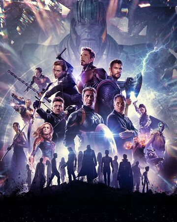
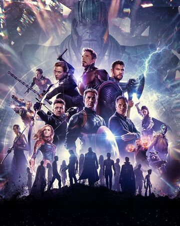
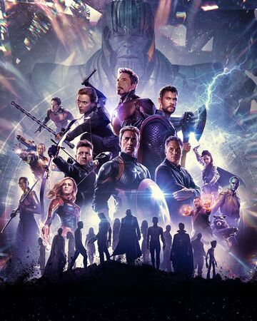
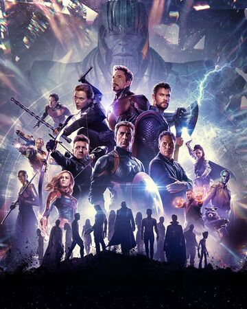

Em Vingadores: Ultimato, após Thanos eliminar metade das criaturas vivas em Vingadores: Guerra Infinita, os heróis precisam lidar com a dor da perda de amigos e seus entes queridos. Com Tony Stark (Robert Downey Jr.) vagando perdido no espaço sem água nem comida, o Capitão América/Steve Rogers (Chris Evans) e a Viúva Negra/Natasha Romanov (Scarlett Johansson) precisam liderar a resistência contra o titã louco.
LSimplesmente adorei o filme, o desfecho foi muito coerente com todas as obras pretéritas, pois tudo
ficou
perfeitamente amarrado.
Apesar de ser um filme bem longo, a história não cansa e a sacada para trazer os
demais heróis de volta foi muito bem pensada como muito bem executada.
O terceiro ato do filme é uma das
coisas mais épicas que fizeram no cinema, a batalha final é GRANDIOSA e empolgante. Destaque mais uma
vez
para o Thanos,ele é um dos melhores filões já feitos no cinema, é inteligente, muito forte, intimidador
e
que nos deixa com um real sentimento de ameaça e impotência.
Grande Personagem!! Os vilões dos filmes de
heróis estavam bem genéricos, mas que bom que Thanos existe! Estou curioso para saber qual será os rumos
que
a marvel irá trilhar no cinema, vamos aguardar para conferir...
PS: A frase dita por Thanos: "Eu sou
inevitável" lembra muito a celebre frase dita pelo Agente Smith em Matrix: "Isso é inevitável". Só eu
que
percebi isso? Será que houve alguma influência?
- B.Boy Jc